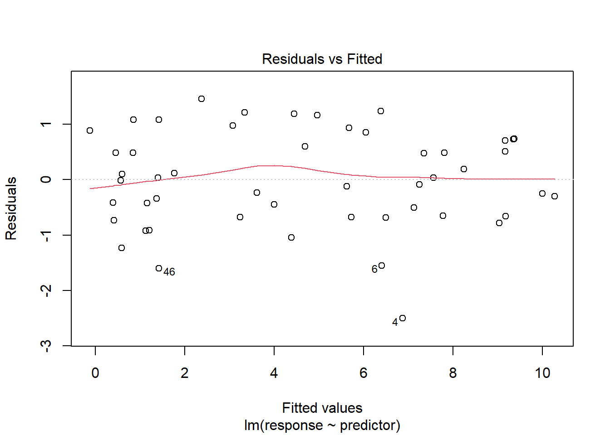
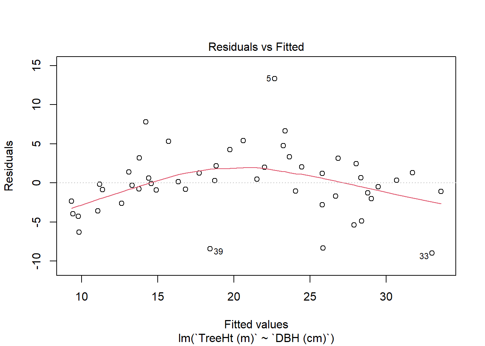
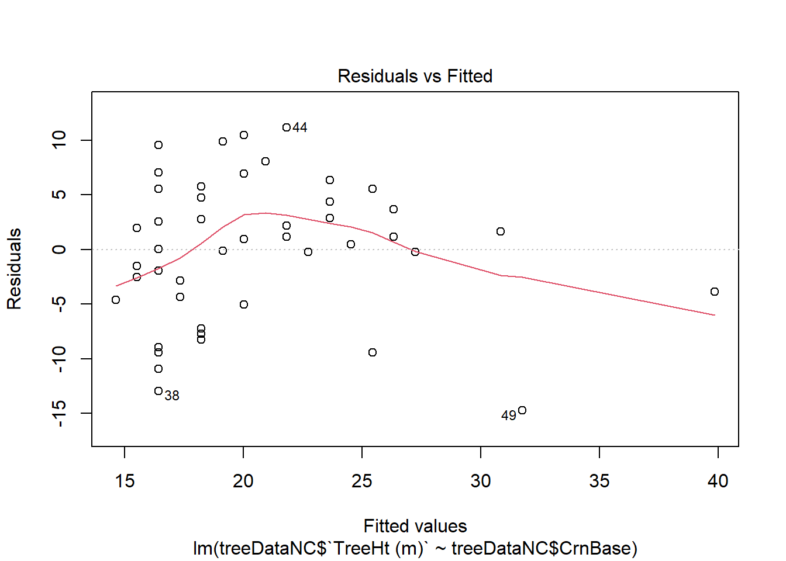
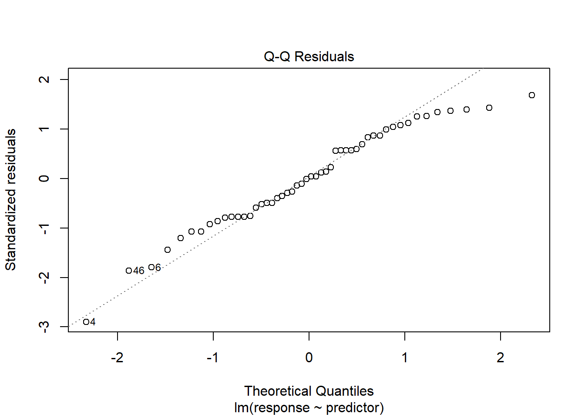
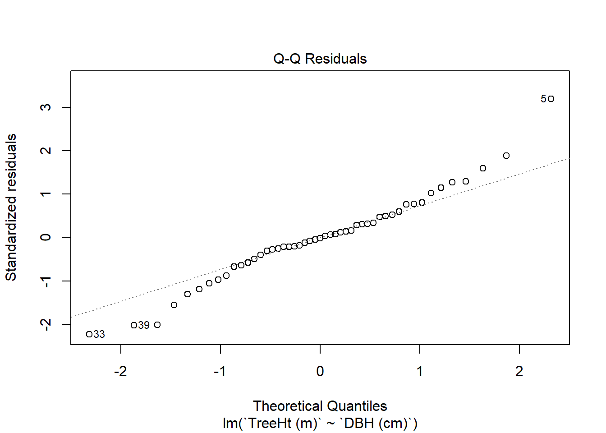
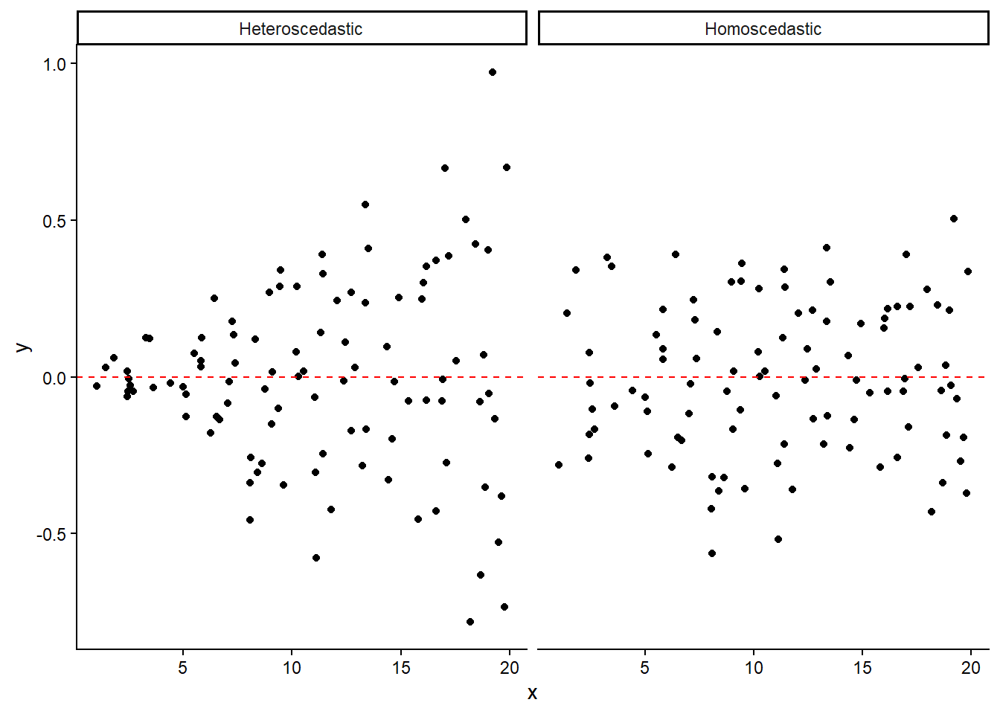
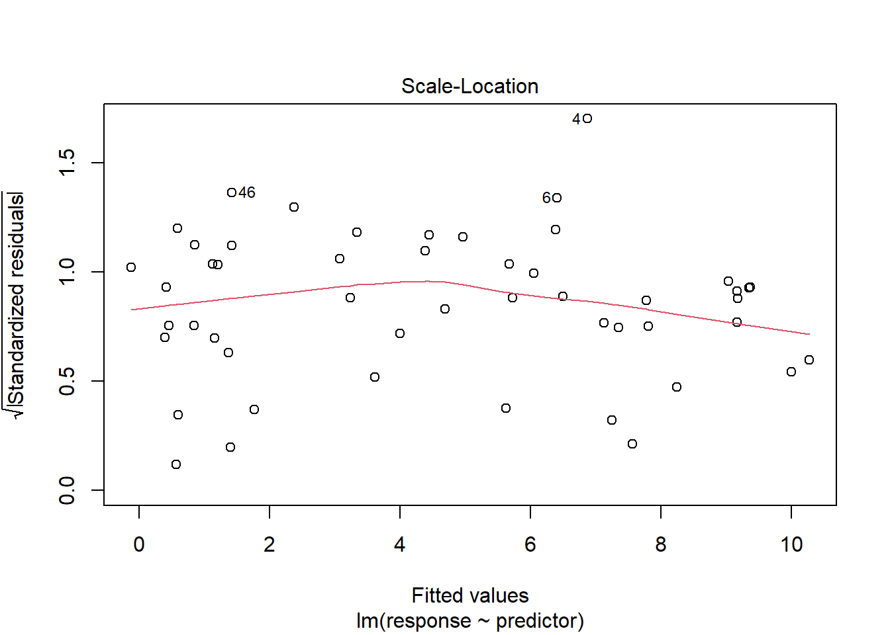
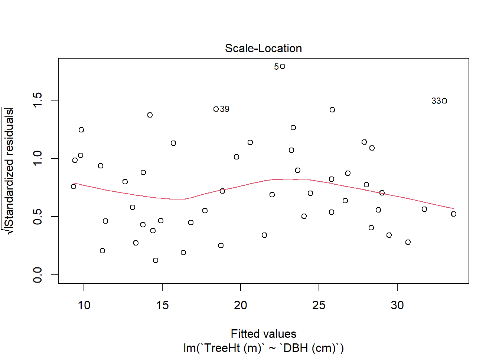
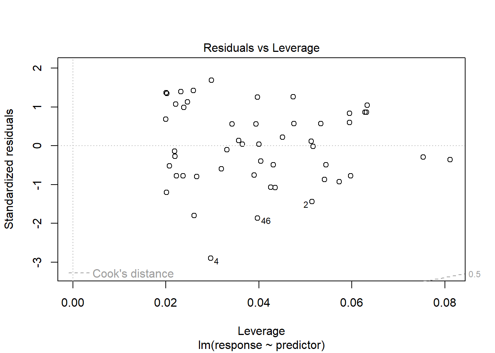
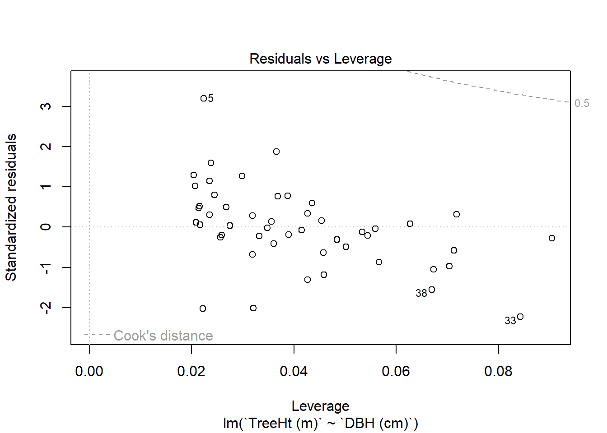

Linear modeling, like hypothesis testing, comes with some assumptions about the condition of the underlying data. Correct use of linear regression assumes that:
the observations are independent
the relationship between the predictor and response variables is generally linear
Independence only becomes an issue when repeated observations are concerned; if you’re recording the same entity at multiple points in time, then this can lead to issues related to autocorrelation and, if not identified, can lead to poor results in time series regression. However, if you’re only recording data at one point time, and that’s true for our tree data, then this is not a major concern.
Visual inspection of the data in a scatterplot can give some insights into the latter three, but they are also readily assessed post-hoc, or after the model has been constructed, using a set of diagnostic tools in R. These can be used to determine whether our tree models meet the above criteria.
Before we do, let’s create some simulated data that we know meets the assumptions of linear modeling:
The first line of this code uses runif to generate 50 random numbers between 0 and 10. We’ll call this our predictor (or x or independent) variable. The second line draws 50 numbers from a standard normal distribution, which we’ll call our error terms. To create our response variable, we’ll just add the error values to the predictor values. Doing so creates some “noise” in the signal.
After combining the these into a tibble, we can see what the relationship looks like by then plotting the values:
Keep in mind that the numerical distance between the predictor and response doesn’t matter, so long as the relationship between them is such that as one increases, the other increases/decreases in a corresponding manner. We can show this by increasing the response values by a constant (10,000):
Since we derived the response values directly from the predictor, we would expect a reasonably strong linear relationship. And when we fit a linear model, we get just that:
Call:
lm(formula = response ~ predictor, data = fakeData)
Residuals:
Min 1Q Median 3Q Max
-2.50126 -0.65556 0.01085 0.72616 1.45562
Coefficients:
Estimate Std. Error t value Pr(>|t|)
(Intercept) -0.23148 0.22374 -1.035 0.306
predictor 1.06322 0.04079 26.067 <2e-16 ***
---
Signif. codes: 0 '***' 0.001 '**' 0.01 '*' 0.05 '.' 0.1 ' ' 1
Residual standard error: 0.8753 on 48 degrees of freedom
Multiple R-squared: 0.934, Adjusted R-squared: 0.9326
F-statistic: 679.5 on 1 and 48 DF, p-value: < 2.2e-16
Knowing this “fake” data follows the requirements for linear mdeling, we can use it to compare what assumptions should look like for ideal data.
Linearity
When we think of a “linear” relationship, we really mean that as the value of the predictor variable increases, the value of the response increases or decreases, and does so in way that is consistent across all values of predictor. Linearity is a property we can assess visually using a scatterplot. Let’s look at our fake data to start with:
The points generally trend in a linear fashion, with response values increasing consistently with predictor values. What if the response didn’t do this? What if there was no relationship at all? We can simulate this by replacing our predictors with random numbers (again, drawn using the runif function):
Looking carefully at the distribution of points is really important for assessing linearity because, even though no relationship exists in the above, it is still possible to conduct a linear regression using this data. Furthermore, the line that we we fit may show some kind of trend:
The geom_smooth line here is showing the best fitting line for this data, which in this case exhibits a slight negative trend (since this is random data, it may look differently on your machine). But the points fall so far away from it that, even if the line trends up or down, that line is simply not a good estimator of the data. This is a good example of the mantra about all models being wrong, but some being useful. In this case, we have a model, but the model is both wrong and not very useful (other than for demonstrating what an absence of pattern looks like).
Another reason to look over the data is that the variables do show a relationship, but that relationship is not linear. We can see what this would look like by making the response value the squared value of the predictor:
Because we’re squaring the value, not only does the response increase alongside the predictor, but the rate at which response increases also goes up. When we plot it, we can see the variables have a non-linear or curvilinear relationship. This kind of relationship is not well described by a straight line, and so it wouldn’t be appropriate to use here.
What about our tree models? Let’s look at crown base height to start:
While there’s some positive trend, the points fall pretty widely around the line. It may also be that there is a slight curve in the response, with the rate of increase in height tapering off as crown base height increases. What about DBH?
This is more consistent with the expectations we have about linearity. As values of DBH increase, values of height also increase, and the rate of change doesn’t seem to vary much across the dataset.
Introducing diagnostic plots
In addition to visual inspection of the data itself, R gives us a set of diagnostic plots that allow us to assess these assumptions. These can be accessed by plotting the linear model object using the Base R plot function. When you run this alone, it will cycle through a set of four different plots. We can look specific plots by using the which argument:
plot(fakeMod,which=1)

This plot is showing the relationship between the “fitted” values produced by the model and the “residual” difference between these values and the actual response variable. The red line gives a trend in the residuals, and points labeled with numbers indicate rows that are at the far margins of the data.
For this plot, we ideally want points that are distributed close-ish the middle line (at zero), and distributed randomly around it. For a contrary example, let’s look at our curvilinear example from the fake data:
Here, we can see that the residuals stray substantially from the line, but also that they are organized: defined sections are above and below the line, rather than being evenly distributed. This again suggests this is not a linear relationship and the residuals are not the result of random error.
When we look at the DBH-based tree model, we get the following:
plot(treeMod_dbh,which=1)

On first look, values are relatively close to the middle, and while there’s a slight curving pattern, with more positive residuals in for middle values of the model, it’s not a very strong pattern. Let’s compare this to the crown base height model:
plot(treeMod_cb,which=1)

This has somewhat more deviation from the center, and more of a curved pattern
Normality of residuals
Next, we can look at the normality of the residuals. Assuming the residuals reflect the variability not accounted for by the model, we would hope that this would reflect random noise in the data, which should approximate a normal distribution. If not, then it’s more probable the patterning in the residuals is driven by a variable we have not included in our model.
To evaluate normality in the residuals, we could extract these out and then run Shapiro tests:
shapiro.test(fakeMod$residuals)
Shapiro-Wilk normality test
data: fakeMod$residuals
W = 0.96742, p-value = 0.1813
A linear model (lm) data object stores a number of pieces of information, among these the residuals themselves, and these can be accessed using the $ operator. Here, we can’t rule out the null hypothesis that our residuals are normally distributed. This makes perfect sense since we created these values from our normally-distributed errors.
We can also visualize the normality of the residuals by accessing the second diagnostic plot, also known as the Quantile-Quantile, or Q-Q plot:
plot(fakeMod,which=2)

This plot is showing how the distribution of (standardized) residuals compares to a theoretical one we might get from “perfectly normal” data. The dotted line is where the residuals would be expected to fall if they were perfectly normal, while the points show where the residuals for our data actually fall.
Here, we’ll modify the errors on the response variable to follow a beta distributon with a right skew:
Shapiro-Wilk normality test
data: fakeMod3$residuals
W = 0.89949, p-value = 0.0004623
One of the things you’ll notice (you may have to look closely) is that the center of the distribution passes below the dotted line. This suggests that the residuals are not adhering to the normal distribution. Being able to visualize the data this way gives us a sense not only of whether the residuals are normally distributed, but where the deviation takes place. Oftentimes, these plots will start to deviate around the margins of the distribution as values become fewer, so it’s not surprising to see some outlying points at these ends. However, as long as the majority of points fall close to the line, particularly around the center, we’re in good shape.
We can run the same thing with our tree DBH model:
plot(treeMod_dbh,which=2)

As before, we see some variability at either end, but it’s minimal, and the central points largely follow the line. In this case, we can probably assume normality. We can also run the Shapiro test if we want confirmation:
shapiro.test(treeMod_dbh$residuals)
Shapiro-Wilk normality test
data: treeMod_dbh$residuals
W = 0.96874, p-value = 0.2156
Constant variance
Another concern is heteroscedasticity, which is uneven variance among the residuals. The plot below shows the distinction between a heteroscedastic distribution vs. a homoscedastic (even variance) distribution.

If the residuals are highly heteroscedastic, this indicates that error is proportional to a variable, and makes it challenging to model variance and error in our regression. We can evaluate this visually, as above, or with the third diagnostic plot: the Scale-Location plot.
plot(fakeMod,which=3)

This graph is showing how the square root of absolute standardized residuals2 vary across fitted values from the model. Ideally, we’d like these to be distributed evenly around an average, without any clear bias toward one side or the other, and with the red trend line being relatively flat without a clear slope. We can look at the same things with our DBH tree model:
plot(treeMod_dbh,which=3)

There is some fluctuation here, but by and large it isn’t exhibiting any serious issues. The fitted line doesn’t exhibit a clear trend up or down, suggesting that the magnitude of the variance isn’t changing appreciably in relation to our fitted values.
Outliers and linear models
Finally, we might want to know whether there are any outliers exhibiting any substantial influence over the model. This kind of leverage can be assessed using a Residuals vs Leverage plot, which evaluates the standardized residuals by their leverage in the model (how much the model would change if a point were omitted). This is accessible as diagnostic plot 53:
plot(fakeMod,which=5)

Here, the most important element is the the grey dotted line, labeled “Cook’s distance”. Points that fall outside this line would influence the regression line substantially if removed. In the case of the fake data, there are none that exceed this limit, and the same is true for our DBH-based model for tree height:
plot(treeMod_dbh,which=5)

From this sequence of diagnostics, we can be confident that our tree models, particularly the more useful DBH-based model, adhere to the assumptions of linear modeling. While these are all important assumptions, and should be evaluated whenever linear models are being constructed, your judgement is the ultimate arbiter of whether an assumption is violated, or, more importantly, violated enough that a model is or is not useful for your application. If a model’s residuals show some minor heteroscedasticity, or the residuals deviate somewhat from normal distribution, does this mean it can’t be used? That depends a lot on how urgently the model is needed, and whether there are better predictors that might be used. Again, use your best judgement to evaluate is not , but good enough for your needs.
This term refers to the difference between the model line and the response values. For example, let’s say our model line indicates that a tree with a DBH of 50 cm should have a height of 18 meters; however, in our dataset, we have a tree with a DBH and 50 cm and a height of 19.5 m. The residual for that one tree is 1.5 meters. We can also think of this as the influence of random variability or error.↩︎
You might be rightly questioning why on earth the residuals are undergoing all of these transformations in these diagnostic plots. It can seem really arbitrary why we do these things, and explanations can often seem opaque. The important things to keep in mind is that the goal is to emphasize or de-emphasize some aspect of the graph so that instances of a particular assumption being violated are clearer. Here, standardizing means dividing the residuals by the standard error, which means that residuals will be comparable for data recorded at different scales. Taking the absolute value means that negative and positive values will all be shown on the same scale, so we’re focused on the magnitude of deviations (important for assessing heteroskedasticity) rather than its direction. Finally, taking the square root means that the plot area won’t be excessively dominated by outliers, making trends easier to see. All of these things combine in a way that helps us better detect shifts in variance across the range of fitted values.↩︎
There is a 4th diagnostic plot, which shows Cooks Distances alone, and 6th plot that gives Cooks Distances by Leverage. These two were added to R more recently; the four being demonstrated here are the most frequently used diagnostic plots, are are the plots that show up by default when use plot without a which argument.↩︎